juniperbakery.com 1 página
Corrigir primeiro agrupado por regra, o mais grave no topo
- Os elementos devem ter contraste de cor suficienteImpede o uso
Certifique-se de que o contraste entre as cores de primeiro plano e de fundo atenda aos limites de relação de contraste WCAG 2 AA
1.4.3 Contraste (mínimo) AAeMAG 4.121 elementos em /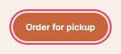
header > .btn[href$="#menu"] 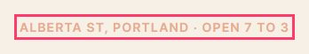
.eyebrow 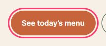
.actions > .btn[href$="#menu"] Como corrigirO elemento tem contraste insuficiente no valor de 3.93 (cor do primeiro plano: #ffffff, cor de fundo: #c8643b, tamanho da fonte: 11.3pt (15px), normal/negrito: normal). Contraste esperado no valor de 4.5:1 Detalhes - O foco não apareceImpede o uso
Quem navega pelo teclado chega nesses elementos e nada na tela mostra onde está.
2.4.7 Foco visível AAeMAG 4.411 elementos em /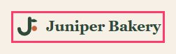
a ./ button 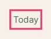
a #menu Como corrigirAdicione um estilo :focus-visible (contorno ou anel) com contraste de pelo menos 3:1 com o fundo. - Botões devem ter texto discernívelImpede o uso
Certifique-se de que botões tenham texto discernível
4.1.2 Nome, função, valor AeMAG 2.21 elemento em /
.icon-btn Como corrigirO elemento não tem texto interno que seja visível aos leitores de tela O atributo 'aria-label' não existe ou está vazio Detalhes - Imagens devem ter texto alternativoImpede o uso
Certifique-se de que elementos <img> tenham texto alternativo ou um 'role' igual a 'none' ou 'presentation'
1.1.1 Conteúdo não textual AeMAG 3.61 elemento em /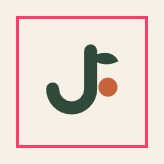
img Como corrigirO elemento não tem um atributo 'alt' O atributo 'aria-label' não existe ou está vazio Detalhes - O conteúdo não se ajusta em 320pxImpede o uso
Com 320 pixels CSS de largura (zoom de 400% num notebook) a página rola pro lado.
1.4.10 Refluxo AAeMAG 4.31 elemento em /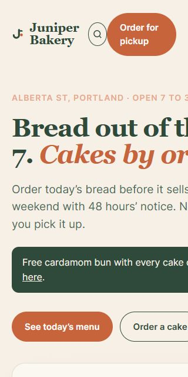
div · +220px Como corrigirDeixe o elemento quebrar ou encolher: max-width: 100%, grids flexíveis, overflow-x: auto em tabelas e código. - Todo o conteúdo da página deve estar contido em regiões (landmarks)A corrigir
Certifique-se de todo o conteúdo da página esteja contido em regiões (landmarks)
eMAG 1.8best practice10 elementos em /
.eyebrow 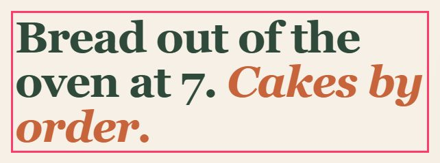
h1 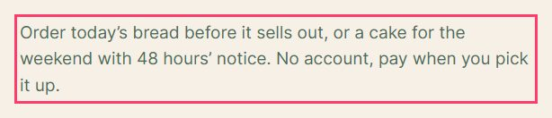
.lead Como corrigirAlgum conteúdo da página não está contido em regiões (landmarks) Detalhes - Níveis dos títulos devem aumentar de um em umA corrigir
Certifique-se de que a hierarquia dos níveis de títulos seja semanticamente correta
eMAG 1.3best practice1 elemento em /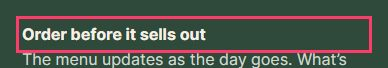
h4 Como corrigirHierarquia de títulos inválida Detalhes - O documento deve ter uma região 'main'A corrigir
Certifique-se de que o documento tenha apenas uma região 'main' e que cada 'iframe' na página tenha no náximo uma região 'main'
eMAG 1.8best practice1 elemento em /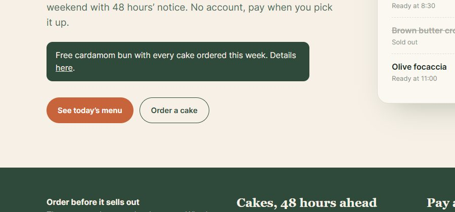
html Como corrigirO documento não tem uma região 'main' Detalhes - Sem link de pular conteúdoVale olhar
A primeira parada do Tab não é um link pro conteúdo principal, então quem usa teclado passa pelo menu inteiro em toda página.
2.4.1 Ignorar blocos AeMAG 1.51 elemento em /a ./ “Juniper Bakery”Como corrigirAdicione “Ir para o conteúdo” como primeiro elemento focável, apontando pra <main id="conteudo">. O eMAG pede isso na recomendação 1.5. - A animação ignora o movimento reduzidoVale olhar
Com “reduzir movimento” ligado no sistema, essas animações continuam. Elas podem causar enjoo em quem tem distúrbio vestibular.
2.3.3 Animação a partir de interações AAA2.2.2 Pausar, parar, ocultar AeMAG 5.5eMAG 2.71 elemento em /span.badgeComo corrigirColoque a animação dentro de @media (prefers-reduced-motion: no-preference), ou pare ela no modo reduce.
Teclado
| Paradas do Tab | Link de pular conteúdo | Sem foco visível | Foco em elementos escondidos | Teclado preso | |
|---|---|---|---|---|---|
/ | 11 | não | 11 | 0 | não |
Ainda conferir à mão
- Ouça a página com leitor de tela (NVDA, VoiceOver, TalkBack): a ordem faz sentido?
- O texto alternativo diz o que a imagem significa ali, não como ela é.
- Vídeos têm legenda; áudios têm transcrição.
- Erros de formulário dizem o que deu errado e como corrigir, do lado do campo.
- Zoom em 200%: nada cortado, nada sobreposto.
- Tudo o que funciona com o mouse funciona com o teclado.
Testes automáticos acham parte dos problemas. O resto precisa da conferência manual acima. A Lei Brasileira de Inclusão (Lei 13.146/2015, art. 63) exige acessibilidade nos sites de empresas com sede ou representação no Brasil e de órgãos públicos.
Cada página
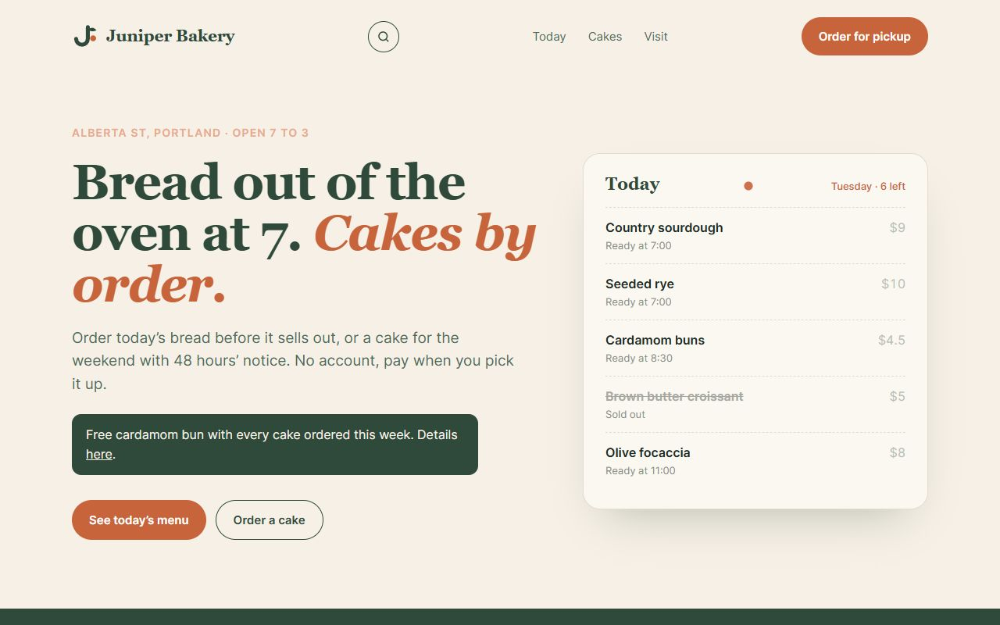
Feito pela /coleoni-a11y · skills.coleoni.com